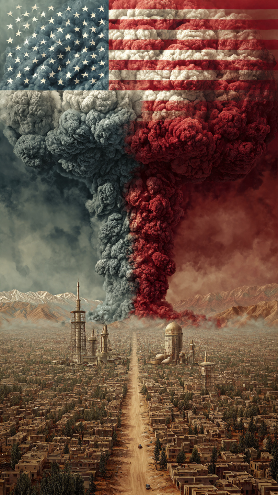
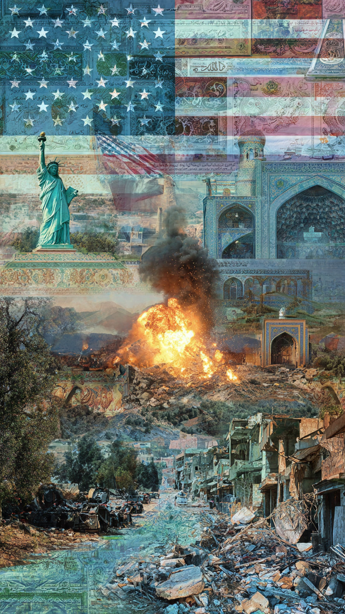

The Middle East conflict in 2026 is creating major global concern as oil prices rise and markets become unstable. This article explains the latest updates, economic impact, and what it means for the world.
The world is once again witnessing rising tensions in the Middle East, where ongoing conflict between regional powers has created uncertainty across global markets. The situation has particularly affected energy supplies, with oil prices experiencing sudden fluctuations. Investors, governments, and citizens worldwide are closely watching developments as even small escalations can have global consequences.
This article explains the current situation in simple terms, covering the geopolitical conflict, oil supply concerns, economic impact, and what experts are predicting for the coming weeks.


The Middle East has long been a region of complex political relationships, and recent developments have intensified existing tensions. Reports indicate ongoing military exchanges, diplomatic breakdowns, and increased security alerts across several nations.
Even though some ceasefire discussions have taken place, ground-level reports suggest that minor strikes and counter-strikes are still occurring. This unstable environment is creating fear of a larger escalation, which could involve multiple countries in the region.
The uncertainty is not only political but also humanitarian, as civilians in affected areas continue to face disruptions in daily life, safety concerns, and economic hardship.
One of the biggest global concerns arising from this situation is the volatility of oil prices. The Middle East is a key supplier of global oil, and even minor disruptions in production or shipping routes can significantly impact international markets.
Recently, oil prices have shown sharp ups and downs, reflecting investor fear and speculation. Countries that heavily depend on imported fuel are already feeling pressure in transportation and manufacturing sectors.
Experts warn that if tensions escalate further, global inflation could rise again due to increased fuel and shipping costs.
Stock markets have also responded with instability, as investors move their money into safer assets like gold and government bonds.
A major area of concern is the Strait of Hormuz, one of the most important oil transit routes in the world. A large percentage of global oil shipments pass through this narrow waterway.
Any disruption in this region could have immediate global consequences, including sudden fuel shortages and extreme price increases. Because of this, international naval monitoring has increased in the region.
Countries across the world are calling for calm and diplomatic solutions. International organizations are encouraging dialogue to prevent further escalation.
Major economies are also preparing emergency energy plans in case oil supply becomes restricted. Some countries are exploring alternative energy sources and increasing strategic oil reserves.
Beyond oil, the conflict is affecting global trade confidence. Shipping costs, insurance premiums, and logistics risks are all increasing due to uncertainty in the region.
Small businesses and developing economies are particularly vulnerable, as they are more sensitive to sudden changes in fuel prices and import costs.
Analysts suggest three possible outcomes:
Most experts believe the next few weeks are critical in determining the direction of this crisis.
The Middle East situation remains one of the most important global issues today because it directly affects energy supply, inflation, and international stability. While diplomatic efforts continue, uncertainty keeps markets and governments alert.
The world is watching closely, hoping for peace and stability to return soon.